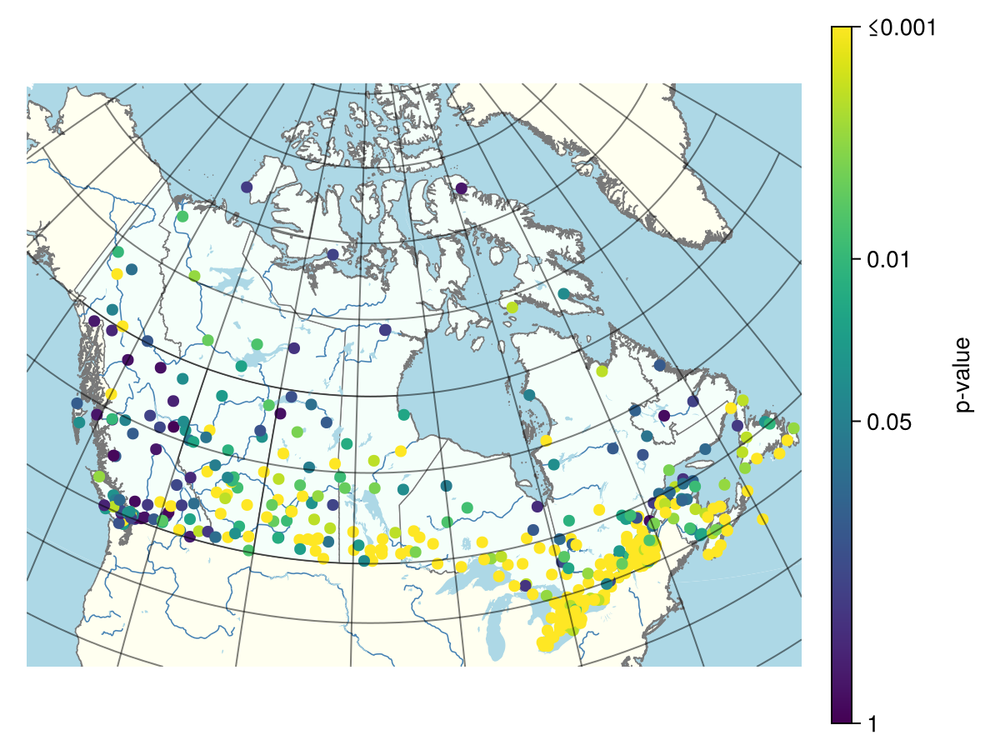
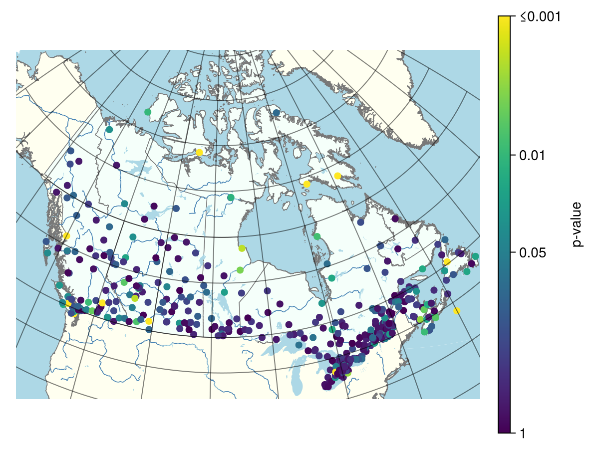

All Canadian stations
using CSV, DataFrames, IDFCurves
using CairoMakie, CanadaMapThis section presents precomputed results for all Canadian stations. The results can be reproduced using the application.jl script available in this repository.
Load the precomputed results:
filename = normpath(joinpath(@__DIR__, "..","..","..", "data", "scalingtest_canadian_stations.csv"))
df = CSV.read(filename, DataFrame)Simple scaling
Extract the bootstrap-based goodness-of-fit p-values for the Simple Scaling model
p = clamp.(df.SimpleScaling_pvalue, 1e-10, 1.0)
values = -log10.(p)Generate an empty map of Canada
fig, ga = generate_canada_map()Displays the p-values on the map
sc = scatter!(
ga,
df.Lon,
df.Lat;
color = values,
colormap = :viridis,
colorrange = (0, 3),
markersize = 10
)
Colorbar(
fig[1, 2],
sc;
label = "p-value",
ticks = (
[0, -log10(0.05), 2, 3],
["1", "0.05", "0.01", "≤0.001"]
)
)
ga.xticklabelsvisible[] = false
ga.yticklabelsvisible[] = false
fig #hide
#save(joinpath(@__FILE__, filepath, "simple_scaling_pvalue.png"), fig; pt_per_unit = 1) #hide
General scaling
Extract the bootstrap-based goodness-of-fit p-values for the General Scaling model
p = clamp.(df.GeneralScaling_pvalue, 1e-10, 1.0)
values = -log10.(p)
nothing #hideGenerate an empty map of Canada
fig, ga = generate_canada_map()
nothing #hideDisplays the p-values on the map:
sc = scatter!(
ga,
df.Lon,
df.Lat;
color = values,
colormap = :viridis,
colorrange = (0, 3),
markersize = 10
)
Colorbar(
fig[1, 2],
sc;
label = "p-value",
ticks = (
[0, -log10(0.05), 2, 3],
["1", "0.05", "0.01", "≤0.001"]
)
)
ga.xticklabelsvisible[] = false
ga.yticklabelsvisible[] = false
fig #hide
#save(joinpath(@__FILE__, filepath, "simple_scaling_pvalue.png"), fig; pt_per_unit = 1) #hide